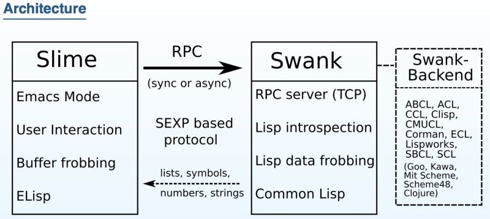

Slime
SLIME(Superior Lisp Interaction Mode for Emacs)

- 역사
- Eric Marsden : SLIM을 만듬(2003. 중반쯤)
- Luke Gorrie, Helmut Eller : 이를 확장시킴.
- SLIME ( Extension of SLIM )
- Superior Lisp Interaction Mode for Emacs
- 기능
- Slime-mode
- SLDB : debugger 인터페이스
- REPL기능 강화
- 자동완성기능 제공
- Inspector기능
slime역활
- 에디터상의 코딩환경을 만들어 주고, Lisp 구현체와 데이터를 주고받을 수 있는 서버 제공
- 에디터 >>
에디터 확장 -> Swank>> Lisp 구현체

| 분류 | 단축키 | 내용 | 함수 |
|---|---|---|---|
| 평가 | |||
| C-M-x | 현재 폼 평가 | slime-eval-defun | |
| C-c C-l | 파일 로드 | slime-load-file | |
| C-c ~ | REPL 네임스페이스 설정 | slime-sync-package-and-default-directory | |
| 이동 | |||
| M-. | 정의로 이동 | slime-edit-definition | |
| M-, | 되돌아가기 | slime-pop-find-definition-stack | |
| C-c C-z | REPL로 이동 | slime-repl | |
| 기타 | |||
| C-M-i | 자동완성 | ||
| M-* | |||
| C-c C-d C-d | describe symbol | ||
| C-c M-o | REPL 깨끗이하기 | ||
| C-cm | macro expand | ||
| C-cdd | describe symbol | ||
| C-cd h | hyperspec | ||
| 디버깅 | |||
| a | Abort | ||
| q | Quit | ||
| n | contiNue |
설정
(use-package slime
:ensure t
:init
(setq inferior-lisp-program (executable-find "sbcl"))
(setq slime-contribs '(slime-asdf
slime-fancy
slime-indentation
slime-sbcl-exts
slime-scratch))
(setq slime-complete-symbol-function 'slime-fuzzy-complete-symbol)
(setq slime-net-coding-system 'utf-8-unix)
(define-key slime-mode-map (kbd "C-c M-n") 'slime-sync-package-and-default-directory)
;; slime-lisp-implementations
;; common-lisp-hyperspec-root
;; common-lisp-hyperspec-symbol-table
;; common-lisp-hyperspec-issuex-table
)
아래는 eros를 이용해서 오버레이로 띄울 수 있는 코드이다.
(progn
;; `overlay'
;; ref: https://www.reddit.com/r/emacs/comments/bi4xk1/evaluation_overlays_in_slime_for_common_lisp/
(require 'cl-lib)
(require 'eros)
(defun custom:slime-eval-last-expression-eros ()
(interactive)
(let* ((region (slime-region-for-defun-at-point))
(form (apply #'buffer-substring-no-properties region))
(pos-end (list (- (cadr region) 1)))
(expr (slime-eval `(swank:eval-and-grab-output ,form))))
(cl-destructuring-bind (output value) expr
(let ((val (concat output value)))
(eros--make-result-overlay value
:where pos-end
:duration eros-eval-result-duration)
(message value)))))
;; (keymap-set slime-mode-map "C-M-x" 'slime-eval-defun)
(keymap-set slime-mode-map "C-M-x" 'custom:slime-eval-last-expression-eros))